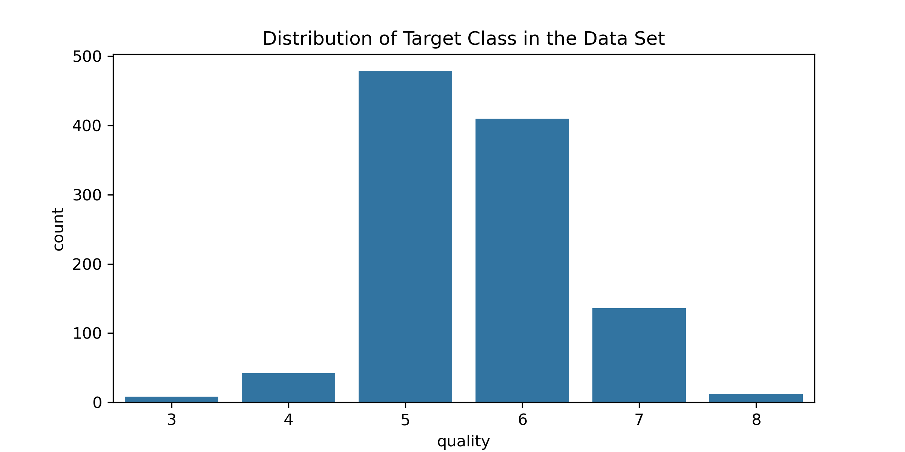
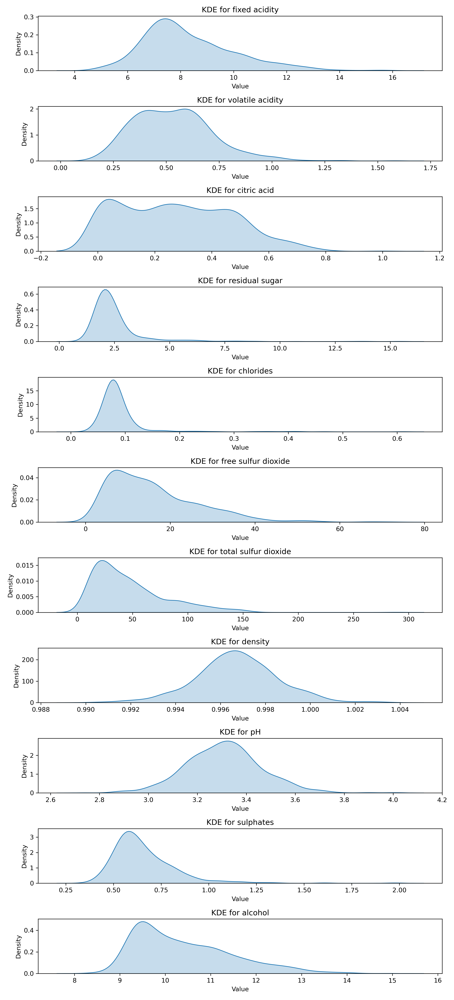
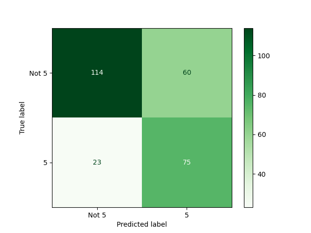
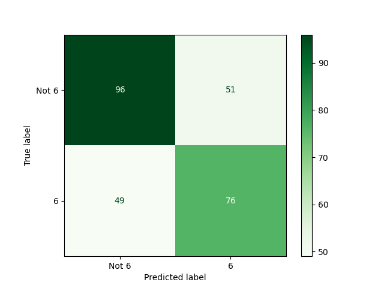

| fixed acidity | volatile acidity | citric acid | residual sugar | chlorides | free sulfur dioxide | total sulfur dioxide | density | pH | sulphates | alcohol | quality |
|---|---|---|---|---|---|---|---|---|---|---|---|
| 7.4 | 0.7 | 0 | 1.9 | 0.076 | 11 | 34 | 0.9978 | 3.51 | 0.56 | 9.4 | 5 |
| 7.8 | 0.88 | 0 | 2.6 | 0.098 | 25 | 67 | 0.9968 | 3.2 | 0.68 | 9.8 | 5 |
| 7.8 | 0.76 | 0.04 | 2.3 | 0.092 | 15 | 54 | 0.997 | 3.26 | 0.65 | 9.8 | 5 |
| 11.2 | 0.28 | 0.56 | 1.9 | 0.075 | 17 | 60 | 0.998 | 3.16 | 0.58 | 9.8 | 6 |
| 7.4 | 0.7 | 0 | 1.9 | 0.076 | 11 | 34 | 0.9978 | 3.51 | 0.56 | 9.4 | 5 |
Predicting wine quality given chemical characteristics of the wine
Summary
This project aims to build a machine learning model to classify the quality of red wine based on its physicochemical properties. The target variable, wine quality, is scored on a discrete scale from 0 (poor quality) to 10 (high quality), presenting a multi-class classification challenge. The dataset, sourced from the UC Irvine Machine Learning Repository (Repository n.d.), comprises 1,599 observations with 11 continuous features such as acidity, alcohol content, and citric acid (Cortez et al. 2009).
Six (6) classification algorithms were evaluated: Dummy Classifier (as a baseline), Logistic Regression, Decision Tree, K-Nearest Neighbors (KNN), Naive Bayes and Support Vector Machine with a Radial Basis Function kernel (SVM RBF). 5-fold cross-validation was used with training data to find the best classification algorithm, based on accuracy, which was the SVM RBF model. Hyperparameter tuning was used to optimize this model and assess its generalization performance. The C, gamma and decision_function_shape hyperparameters on SVC were tuned using the RandomizedSearchCV() from sklearn. The model with hyperparameters that gave the best accuracy was selected for deployment on the test set. This model gave an accuracy on the testing set of around 0.6.
By leveraging machine learning, this project seeks to provide a systematic and measurable way to predict wine quality, aiding manufacturers and suppliers in assessing product value based on its chemical properties.
Introduction
Red wine has been a cultural and economic staple since ancient times, originating from early civilizations like the Greeks and evolving into a global industry valued at approximately 109.5 billion USD. Despite its widespread availability, differentiating between high and low-quality wines remains a challenge for most consumers. Traditionally, this task has relied on the expertise of sommeliers, whose judgments are often subjective.
This project aims to bridge the gap between subjective assessments and objective measurement by utilizing machine learning to predict wine quality. By analyzing the physicochemical properties of red wine—such as acidity, alcohol content, and sugar levels—we aim to classify its quality on a scale from 0 to 10.
Using the Red Wine Quality Dataset from the UC Irvine Machine Learning Repository, we evaluate the performance of several classification algorithms: Logistic Regression, Decision Tree, KNN, Naive Bayes and SVM with an RBF kernel. Through hyperparameter tuning and cross-validation, the goal is to identify the most accurate model and demonstrate the practical application of data-driven decision-making in the wine industry (Cortez and Cerdeira 2009).
Methods & Results:
Data Loading
Table 1 provides a preview of the wine dataset used in the analysis.
Data Cleaning and Duplicates Handling
| Column | Missing Values |
|---|---|
| fixed acidity | 0 |
| volatile acidity | 0 |
| citric acid | 0 |
| residual sugar | 0 |
| chlorides | 0 |
| free sulfur dioxide | 0 |
| total sulfur dioxide | 0 |
| density | 0 |
| pH | 0 |
| sulphates | 0 |
| alcohol | 0 |
| quality | 0 |
A thorough examination of the dataset revealed no missing values in any of the columns. This was verified by checking for null entries in all rows and columns using methods such as isnull() and info() in Python.
Table 2 summarizes the missing data in each column.
| Step | Count | |
|---|---|---|
| 0 | Initial Missing Values | 0 |
| 1 | Removed Duplicates | 240 |
Table 3 summarizes the data cleaning steps undertaken.
Columns
- fixed acidity: grams of tartaric acid per cubic decimeter.
- volatile acidity: grams of acetic acid per cubic decimeter.
- citric acid: grams of citric acid per cubic decimeter.
- residual sugar: grams of residual sugar per cubic decimeter.
- chlorides: grams of sodium chloride per cubic decimeter.
- free sulfur dioxide: grams of unreacted sulfur dioxide per cubic decimeter.
- total sulfur dioxide: grams of total sulfur dioxide per cubic decimeter.
- density: density of the wine in grams per cubic decimeter.
- pH: pH value of the wine
- sulphates: grams of potassium sulphate per cubic decimeter
- alcohol : percentage volume of alcohol content.
- quality : integer range from 0 (representing low-quality) to 10 (representing high-quality) (Török 2023).
Data Validation
The dataset has been validated against the following criteria:
- Column Data Types: All columns conform to the expected data types.
- Value Ranges: All columns conform to the specified range.
- Duplicate Rows: No duplicate rows were found.
- Empty Rows: No null values or rows with all null values were found.
The dataset passed all validation checks successfully.
Data Splitting
Our dataset was split into two groups - 80% is split for our training data while the remaining 20% is reserved for our testing set.
Exploratory Data Analysis (EDA)
| statistic | fixed acidity | volatile acidity | citric acid | residual sugar | chlorides | free sulfur dioxide | total sulfur dioxide | density | pH | sulphates | alcohol |
|---|---|---|---|---|---|---|---|---|---|---|---|
| count | 1087 | 1087 | 1087 | 1087 | 1087 | 1087 | 1087 | 1087 | 1087 | 1087 | 1087 |
| mean | 8.37663 | 0.532608 | 0.278914 | 2.55681 | 0.089195 | 16.2557 | 47.9775 | 0.996779 | 3.30603 | 0.662079 | 10.4302 |
| std | 1.75231 | 0.186253 | 0.196267 | 1.35874 | 0.0506226 | 10.8192 | 34.3516 | 0.0018631 | 0.153803 | 0.173236 | 1.0823 |
| min | 4.6 | 0.16 | 0 | 0.9 | 0.034 | 1 | 6 | 0.99007 | 2.74 | 0.37 | 8.4 |
| 25% | 7.2 | 0.39 | 0.1 | 1.9 | 0.07 | 7 | 22 | 0.99566 | 3.21 | 0.55 | 9.5 |
| 50% | 8 | 0.52 | 0.26 | 2.2 | 0.08 | 14 | 39 | 0.9968 | 3.3 | 0.62 | 10.1 |
| 75% | 9.3 | 0.64 | 0.44 | 2.6 | 0.092 | 22 | 65 | 0.997875 | 3.4 | 0.73 | 11.1 |
| max | 15.9 | 1.58 | 1 | 15.4 | 0.611 | 72 | 289 | 1.00369 | 4.01 | 2 | 14.9 |

It is noted that not all possible target classes (from 0 to 10) are present in the training data.
For our Exploratory Data Analysis we wanted to see if our features have a linear correlation with each other. The below plot is a heatmap which shows the pearson correlation for each feature.
It would appear at first glance that there are a few features which seem to have a moderate linear correlation with each other. Some notable connections we can make from Figure 2 is between pH levels and fixed acidity which appears to have a negative correlation. Density and fixed acidity on the other hand appears to have a positive correlation, with fixed acidity being a common feature between both examples.

The KDE Plot shows that while some of our features are normally distributed, not all of them are. There are a few features which are skewed to the right such as alcohol and sulphates. There are other features in Figure 3 which have multiple peaks such as volatile acidity and citric acid.

Finally Figure 4 is a pairplot which shows the actual distribution of the datapoints feature by feature.
Analysis
Model Selection
From the Exploratory Data Analysis, it was observed that all features within the dataset were numeric. In order to ensure the the data is interpreted properly by the models, a preprocessor was used. This preprocessor included a StandardScaler() (Scikit-learn Developers n.d.) to ensure standardization of numerical features.
Several popular classification models were examined for this task which included:.
- Dummy Classifier*
- Decision Tree
- k-Nearest Neightbours Classifier
- Support Vector Machine with Radial Basis Function
- Gaussian Naive Bayes
- Logistic Regression
* Note this model was used as a baseline, as the default behaviour would always predict the most frequent appearing class in the training set (Scikit-learn Developers n.d.).
The results of 5-fold cross validation on the training set for each model is shown below:
| model | fit_time | score_time | test_score | train_score |
|---|---|---|---|---|
| dummy | 0.003 (+/- 0.001) | 0.003 (+/- 0.000) | 0.428 (+/- 0.001) | 0.428 (+/- 0.000) |
| decision tree | 0.010 (+/- 0.002) | 0.003 (+/- 0.000) | 0.481 (+/- 0.039) | 1.000 (+/- 0.000) |
| kNN | 0.006 (+/- 0.001) | 0.012 (+/- 0.001) | 0.523 (+/- 0.028) | 0.666 (+/- 0.008) |
| RBF SVM | 0.035 (+/- 0.009) | 0.013 (+/- 0.002) | 0.596 (+/- 0.027) | 0.668 (+/- 0.005) |
| naive bayes | 0.005 (+/- 0.001) | 0.003 (+/- 0.001) | 0.532 (+/- 0.011) | 0.556 (+/- 0.013) |
| log reg | 0.028 (+/- 0.005) | 0.004 (+/- 0.000) | 0.581 (+/- 0.031) | 0.598 (+/- 0.008) |
From these results, it appeared that the RBF SVM gives the best validatio nscores. Therefore, this model will be used for hyperparameter tuning in the following section.
Hyperparameter Tuning
After performing RandomizedSearchCV on the RBF SVM model, the best parameters for the model is as follows in Table 6:
| svc__C | svc__class_weight | svc__decision_function_shape | svc__gamma | best_score | |
|---|---|---|---|---|---|
| 0 | 3.90797 | nan | ovo | 0.00862913 | 0.586928 |
Model Evaluation
The RBF SVM model with the best tuned hyperparameters was used to find accuracy on the testing set. This resulted in an accuracy of 0.574.
Specific breakdowns of what predictions the model made can be summarized in the confusion matrices below:


The numbers of true positives, true negatives, false positives and false negatives from the above confusion matricies are summarized here:
| Confusion Matrix Metric | 3 | 4 | 5 | 6 | 7 | 8 |
|---|---|---|---|---|---|---|
| True Negative | 271 | 259 | 112 | 95 | 239 | 268 |
| False Positive | 0 | 0 | 48 | 66 | 2 | 0 |
| False Negative | 1 | 13 | 29 | 38 | 31 | 4 |
| True Positive | 0 | 0 | 83 | 73 | 0 | 0 |
Discussion
The evaluation of multiple machine learning models for classifying red wine quality revealed that the Support Vector Classifier (SVC) with a Radial Basis Function (RBF) kernel performed the best in terms of validation accuracy after hyperparameter tuning. The final testing accuracy (0.574) demonstrated the model’s ability to generalize fairly decently to unseen data. Among the other models, Logistic Regression also achieved a reasonable validation accuracy but fell short compared to the SVC RBF. The Decision Tree model exhibited overfitting, achieving perfect accuracy on the training data but only moderate validation accuracy. Models like k-Nearest Neighbors and Naive Bayes performed relatively poorly, with lower accuracies and limited predictive power.
Despite the superior accuracy of the SVC RBF model, it required the longest fit and score times, highlighting potential limitations in computational efficiency, particularly in scenarios requiring real-time predictions or processing large datasets.
The findings are somewhat aligned with expectations. The SVC RBF’s strong performance is consistent with its reputation for handling complex, non-linear relationships in the data effectively. However, the overall accuracy 0.574 is lower than ideal for a practical classification system, indicating challenges in predicting wine quality with high precision based solely on the physicochemical features provided. This outcome suggests that wine quality may be influenced by additional factors, such as sensory data or external conditions, that were not captured in the dataset.
The pronounced overfitting in the Decision Tree model and the relatively modest performance of simpler models like Naive Bayes and k-NN were expected, as these models are less equipped to capture intricate relationships in high-dimensional datasets.
The classification accuracy achieved in this project has implications for the practical applications of such models in the wine industry. While the model can provide a rough estimate of wine quality, its predictions may not be reliable enough for high-stakes decisions, such as pricing or marketing. However, it could still serve as a preliminary screening tool for winemakers to assess batches of wine based on their chemical profiles.
The findings also highlight the importance of computational efficiency. Although the SVC RBF model outperformed others in accuracy, its extended fit and score times may limit its usability in time-sensitive applications. This trade-off between accuracy and efficiency should be carefully considered when deploying the model.
It should be noted that the predictions of targets of this problem have an inherent ordering from 1 to 10, where lower values suggest worse quality wine and higher values suggest better quality wine.
This study raises several avenues for future exploration:
- How would including additional physicochemical features or sensory attributes, such as taste or aroma, influence model performance? Similarly, would excluding less impactful features reduce noise and improve accuracy?
- Would increasing the dataset size or balancing the class distribution lead to better generalization performance?
- Will using a different kernel for the SVC yield greater performance?
References
Cortez, Paulo, and António Cerdeira. 2009. “Modeling Wine Preferences by Data Mining from Physicochemical Properties.” https://www.semanticscholar.org/paper/Modeling-wine-preferences-by-data-mining-from-Cortez-Cerdeira/bf15a0ccc14ac1deb5cea570c870389c16be019c.
Cortez, Paulo, António Cerdeira, Fernando Almeida, Telmo Matos, and José Reis. 2009. “Modeling Wine Preferences by Data Mining from Physicochemical Properties.” Decision Support Systems 47 (4): 547–53. http://www3.dsi.uminho.pt/pcortez/wine/.
Repository, UCI Machine Learning. n.d. “Wine Quality Dataset.” https://archive.ics.uci.edu/dataset/186/wine+quality.
Scikit-learn Developers. n.d. Sklearn.dummy.DummyClassifier. https://scikit-learn.org/dev/modules/generated/sklearn.dummy.DummyClassifier.html.
———. n.d. Sklearn.preprocessing.StandardScaler. https://scikit-learn.org/dev/modules/generated/sklearn.preprocessing.StandardScaler.html.
Török, D. F. 2023. “Machine Learning for Predicting Wine Quality and Its Key Determinants Based on Physicochemical Properties.” SSRAML 6 (11): 1–21.